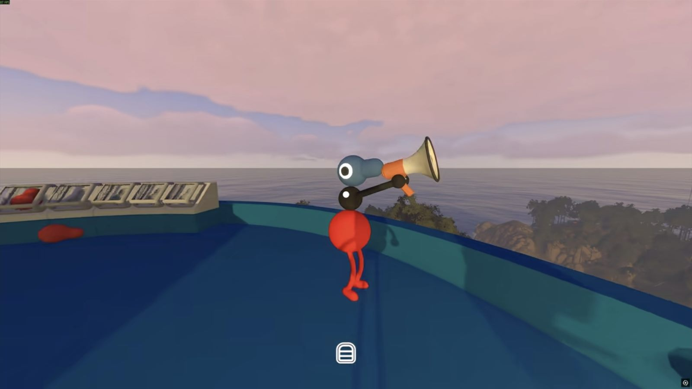
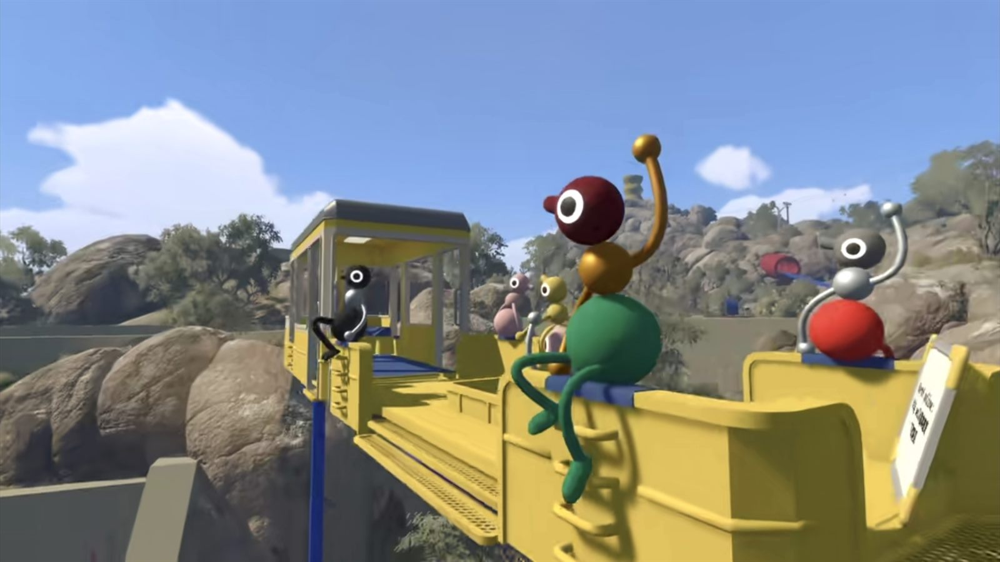
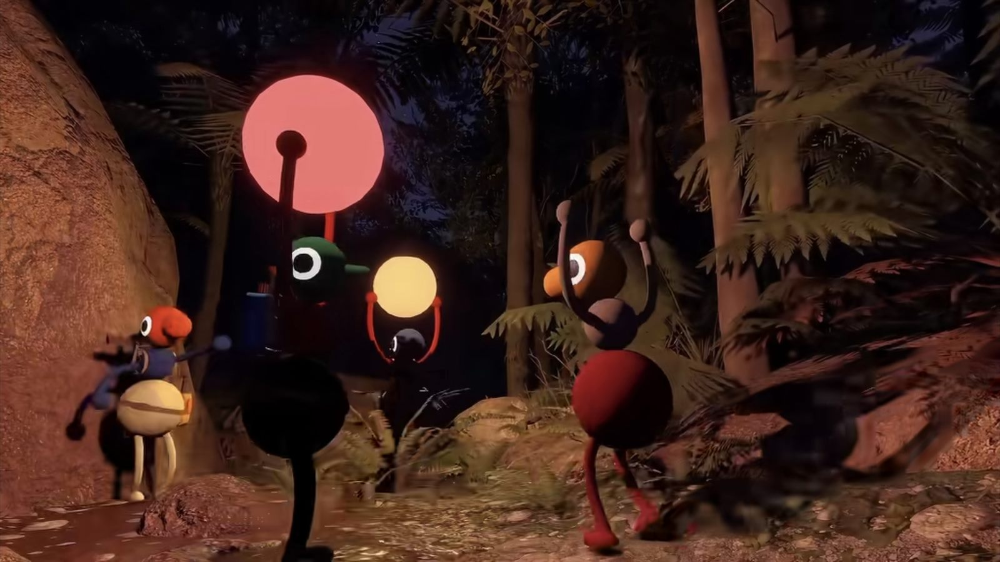
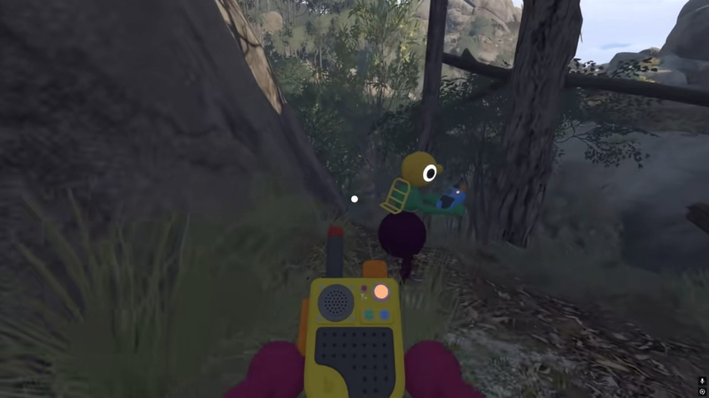

In-depth review
Big Walk Review: A Deeper Kind of Co-op
Big Walk might just be the best co-op game of the year. I'd go further and drop the 'of the year' — the line still holds. Not because its levels are clever or its puzzles airtight. Honestly, a pure puzzle fan would struggle to call most of it a 'puzzle' at all. What got me is how deep it digs into 'working together'. Few co-op games go this far. Early on you co-ordinate over voice; mid-game some rooms strip the voice away and push you to find another way to work together; by the end you don't need words at all — a nudge, a look, and everyone just knows. With one island trip, House House showed me what 'co-op' really means.
The core mechanic: proximity voice

Talk about Big Walk and you have to start with its proximity voice. As the name says, the in-game voice fades with distance, just like real life: drift too far and the sound falls away; get close and you can hear each other clearly.
Half the game is built around that system, which is exactly why I'd urge you not to hop onto Discord. It doesn't just wreck a stack of level design — it rinses the moment out of the ending puzzle run too.
So no external voice app — what if you get lost or left behind on the way? The official trailer already told you: getting lost and briefly losing your team is part of the trip. And the studio gives you real ways to reunite — fire a flare from the lighthouse on a ridge, talk over a walkie-talkie to whoever's carrying a radio, or aim a laser and send a beam into the sky to point the way.
Reuniting after you've been scattered around is one of the most quietly lovely parts of the game. As the trailer puts it: when you finally get back together, you hear what everyone got up to while you were apart.
Two, three, or more of you

As a multiplayer-first game, who you bring matters. My take: playing with old friends is one flavour, and playing with strangers from the community is another. That stretch of puzzles running mid-game to the finale can genuinely turn strangers into a real group — provided your team has the patience and is willing to talk.
The game ships separate versions for two, three, and four-plus players, and you can switch every time you open a room. Two players get the cleanest puzzle experience; the more people you add, the more it turns into an online outing — stroll, chat, take in the sights together.
Art and atmosphere

The art isn't spectacular, but it's easy on the eyes. After all, who'd want to go on an outing if the scenery were ugly? The sea is what I love most — it's genuinely lovely, and drifting by the water with your friends just to watch it is a treat.
Level design, in three kinds

A number of the levels feel like a variety show's obstacle round, and playing them gives you a real kick of being on the show yourself. But when it comes to the levels themselves, I get careful — I don't want to spoil anything.
So this one only shows a little of the puzzle machinery, not the full solutions. If you're spoiler-shy, jump straight to 7:17.
The puzzles run a wide gamut, and I sort them loosely into three kinds — not a strict taxonomy either; the ones that hinge on headphones are too few to count, so I've left them out.
The first kind: levels I wouldn't call puzzles at all. These are flatter than the other two, and the fun mostly rides on whether the people you're with are actually fun. A relay, everyone handing a thing on down the line until it reaches the end (fine when it's close, painful when it's a long haul — see the MV); a room that locks you in for five minutes to half an hour, a pure patience check (I get that the studio wanted a place for you to chat, but honestly it's unnecessary); or a pure coordinate puzzle, where some of you run to the coords and hit buttons while the others wait by the box for the gourd to drop out.
These play fine for me — maybe the studio was trying to say something, but honestly the fun is thin. The other two kinds make up for that.
The second kind: vision-restricted levels. Not many, but really good. One player gets a blindfold and can't see, and has to be guided by the rest. It's a lot of fun, and it tests whether the blindfolded player genuinely trusts the team. Like this one: 'go forward a bit', 'a little left', 'don't turn the camera', 'just a little, nudge again'. Honestly, the rhythm of calling and obeying is where the joy lives.
A shame there are only two of them, though.
The third kind: sound-isolated levels, the game's sharpest design. In these you can't talk at all, so you lean on in-game actions or a code you quietly agreed on beforehand to get a wordless job done together.
This one, for example: first settle what each gesture stands for, then pass the symbols along wordlessly. 'Crouching with both hands up again? No way.' 'That one's a triangle.' 'Just watch and see if he gets it… he's lost… oh, he got it.' Watching a teammate click into place is its own reward.
And these levels aren't just good — they're the on-ramp to that run of challenges waiting at the end.
On the ending, no spoilers
I really won't spoil the ending challenges. I'll only say this: if you've been talking to your teammates the whole way through, then the puzzle run at the finish lands somewhere you can't quite put into words.
To close

Multiplayer games come with all kinds of co-op. Plenty are goal-first, built around clearing, solving, building. Big Walk takes another road. It never forces strangers together — it accepts the scattered, the lost, and the brief disconnection along the way. You can just hang out in the world, chat, wander, and pick up a level when you feel like it.
Rather than treating cooperation as a means to finish, it cares about the understanding people slowly grow into with each other on the trip. Like that key that keeps turning up: a long stretch of talking and compromise, until the rapport between you quietly becomes a key of its own, ready to open the final puzzles.
That closing run feels like the studio scooping up every laugh, every moment of being moved, every scrap of trust you'd worked out on the road, and putting it all in one place. Once it's done I can say it plainly: they did it.
All those thousand words you gathered along the way, in the end they come down to one line:
I know what you mean.